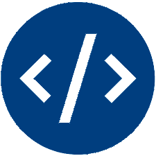

Hobbies
"To find happiness in life, find three hobbies:
one to make you money, one to keep you in shape
and one to express your creativity."
Money
I said I consider web-development a hobby, because it is so enjoyable for me, I can spend few days in a row working on a project or learning new things about a feature. Now, when I got a formal education in the subject, I love it even more.
My interests don’t stop at only web languages, like JavaScript. I realised I have a skill and passion for coding in general, and recently I started looking into game development as another potential money-generating hobby, using Unity and C#.

Shape
Ever since I first saw a Jackie Chan movie, I was fascinated with martial arts. The art of mastering your own body always appealed to me. I love martial arts because to master them you have to constantly push yourself and be a better version of your yesterday’s self.
When I moved to Vancouver my friend recommended me a master, who teaches krav maga. So now, twice a week, you can find me at the gym throwing kicks and punches and torturing myself with exercises.
Creativity
I have been a gamer for my whole life. I think video games are the most complete art form humanity has created. To any good game there is a story, music, art, game design and much, much more.
However, only recently I picked up the hobby that allows me to fully express my creativity.
I discovered the world of table-top RPGs, such as “Dungeon and Dragons”. I began creating my own world, my own stories, landscapes and people and I am not stopping any time soon.